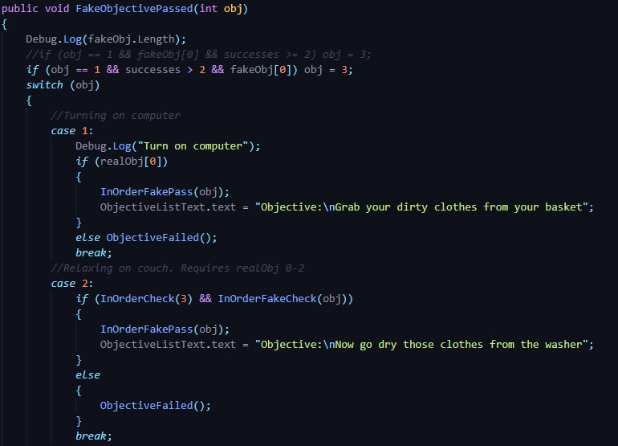
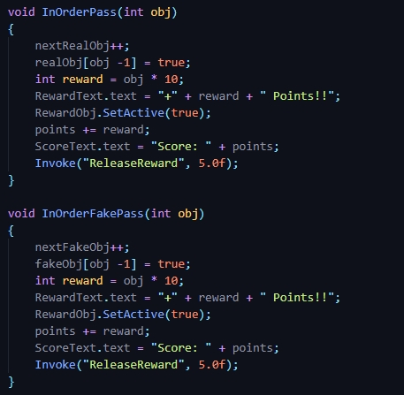
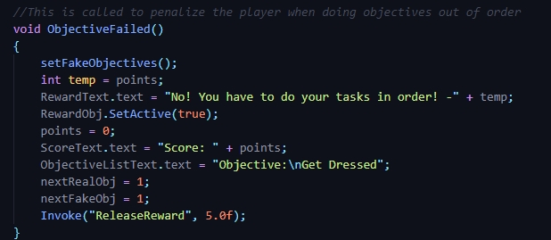
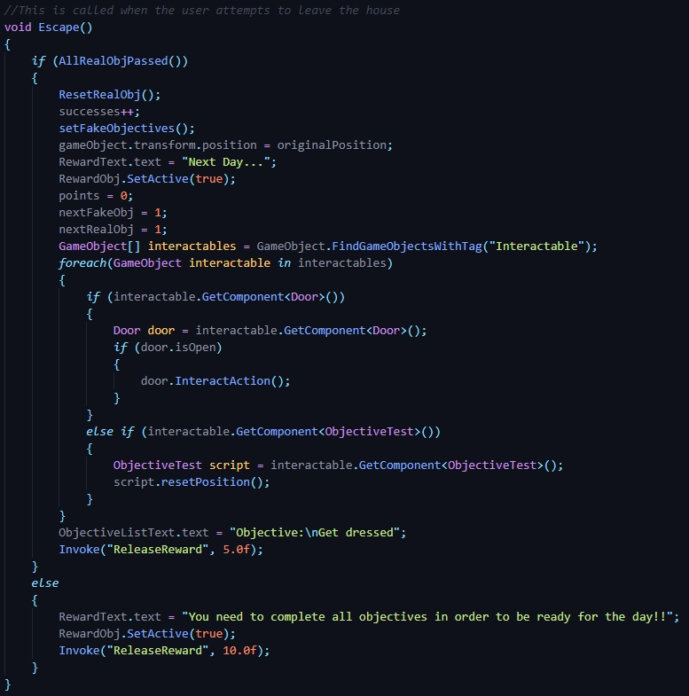

The start method is called before the first frame. There's an Awake method you could do as well, but that is called before objects are placed in the scene. In my Start(), I set the
originalPosition Vector3 as the position the player is at, to be able to reset the player's position after leaving through the door. I instantiate some integers as well to keep track
of info on the game progress. I also set a GameObject array equal to all of the fake objective objects to manipulate them in a later code block. They need to be treated differently
than the real objectives, as they need to be interactable only when they're a possible objective. And lastly, I call a helper method to set the Fake Objectives, which instantiates
the fake objective boolean array, based on the successes.

The way I handled objective passing is with two different Objective Passed methods. They are very similar code blocks, and both are handled with a switch block that looks like this.
There are different ways to do this, but I found it best for me, to use a switch block since I need to change the objective text based on which objective was passed. On each line though,
it checks if it was passed in order or not, then either calls the inOrderPass or ObjectiveFailed based on that. The first index for both doesn't work properly in the helper methods, so
I created a manual check for both.

In those InOrder methods, it increments the next objective int for their respective type, then sets the correct index of the boolean arrays as true, meaning that objective was passed.
This is where I set the Reward text that informs the player of their point gain, and updates the score text. Then I use Invoke() to call a helper method that just sets the Reward UI
Object as inactive, after the 5 seconds given in the parameters.

In Objective failed, it first sets the fake objectives again, causing them all the be false, resetting progress. But ONLY the fake objectives. I then notify the player through the
reward text about the loss of points, and to do the objectives in order. I reset the Objective text, and the next objective ints and invoke the helper method to make the reward text
inactive once more. The biggest part to note in this, is that it doesn't touch the progress of the realObjectives boolean array at all.

And the last code block I'll go over is the Escape method. At the very start, it checks if all the real objectives are passed. This helper method does not care about them being in
order. Then I increment the successes int to note the player succeeded in leaving again. Reset the fake objectives then set the position of gameObject(The game object this script is
attached to, which is the player in this case). I notify the player that it's now the next day, reset the points and next objective ints, then reset each door to be closed, and the
state of each objective item.